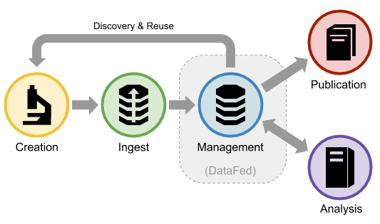
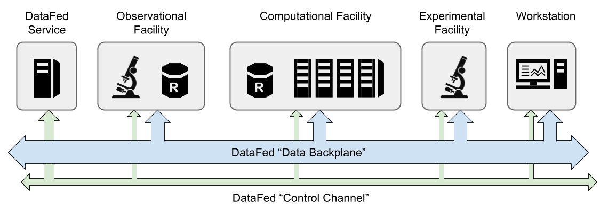

Introduction to DataFed
Contents
Introduction to DataFed#
What is DataFed?#
DataFed is a federated and scalable scientific data management and collaboration system that addresses the critical need for holistic and FAIR-principled “big data” handling within, and across, scientific domains and facilities with the goal of enhancing the productivity and reproducibility of data-oriented scientific research.
DataFed supports the early lifecycle stages of “working” scientific data and serves as a tool to ease the burden associated with capturing, organizing, and sharing potentially large volumes of heterogeneous scientific data.
DataFed provides an environment in which scientific data can be precisely controlled and refined in preparation for eventual data publishing.
Background#
The primary goal of DataFed is to improve scientific data quality by enabling precise early-lifecycle control over data artifacts, with the ability to uniformly share and access data across geographically distributed facilities
DataFed can be thought of as a “tier 2+” distributed data storage system - meaning it is intended for creating and working with data that is of medium- to long-term significance to the owner and/or collaborators
Unlike a tier 1 storage system (i.e. a local file system), DataFed compromises raw data access performance in favor of FAIR data principles
This means that DataFed is used for finding and saving data, not working with data directly.
DataFed is just one platform, there are other similar platforms each with their own advantages and disadvantages.
DataFed solves many of the critical problem areas faced within the University system
DataFed Lifecycle#
DataFed is an enabling technology for the early lifecycle stages of scientific data - from data ingest to pre-publication

DataFed provides interfaces that can be used to capture metadata, provenance, and raw data from the creation stage
New records may be created and linked to input records or dedicated context records.
Why DataFed?#
Geographically Dispersed
DataFed directly benefits both individual researchers and teams of geographically dispersed collaborators who need to capture, manage, share, and access scientific data from within, or across, any of the experimental, observational, compute, or analytics resources
DataFed allows you to use trusted authentication services to share data around the world
Domain Agnosticism
DataFed is domain- and methodology-neutral in that it does not require users to utilize pre-defined data formats or processes
DataFed provides powerful domain-specific metadata indexing and query capabilities augmented by user/community defined schemas.
Working Data Support
DataFed supports the pre-publication data lifecycle which is both critical and complex in collaborative scientific research - yet is under served by existing data management systems’
There are many services to publish data, however, there are less tools for important failed, or non-published experiments
Scalability
DataFed was designed to easily scale-out across multiple/many organizations and facilities by relying on federated identity technology and a common access control mechanism
Individual organizations are still able to manage their own data storage resources and policies
Most scientific data management systems are restricted to a single organization
Big Data Support
DataFed was design to support “big data” and the often complex environments
DataFed utilizes Globus (GridFTP) for data transfer between facilities because it is the defacto standard for high performance movement of very large data sets (Petabyte scale) between government-funded user facilities (DoE), research universities, and commercial cloud computing services
Foundations for Data Applications
DataFed provide application programming interfaces (APIs) to allow other services or applications to be utilize DataFed’s data management capabilities
System Overview#
DataFed is a scientific data federation formed from a network of distributed services and data storage repositories that enable users to create, locate, share, and access working scientific data from any organization, facility, or workstation within the DataFed network
DataFed provides a software framework for the federation of distributed raw data storage resources along with centralized metadata indexing, data discovery, and collaboration services that combine to form a virtual “data backplane” connecting otherwise disjoint systems into a uniform data environment
DataFed features a robust and scalable centralized data indexing and orchestration service that ties potentially large numbers of independent DataFed data storage repositories together with high-performance data transfer protocols and federated identity technologies
Currently, DataFed’s central services are hosted within the Oak Ridge Leadership Computing Facility (OLCF) at the Department of Energy’s Oak Ridge National Laboratory (ORNL)
Data that is managed by a DataFed repository is maintained in system-controlled storage with no user-level file system access. This is to both protect the managed data from inadvertent changes or deletions, and to ensure that all data read/write operations go through a DataFed interface for proper system-wide coordination and access control.

DataFed Services - Hosts the central metadata server
Observational Facility - This is a place where data is collected and collocated with a repository
Computational Facility - This is a facility where computation is conducted, there could be a federated repository located there
Experimental Facility - This is a place where data is collected
Workstation - This is an end user that can view and analyze the data
Data Backplane - This is the high speed GridFTP transfer bus
Core Channel - This is the low speed internet protocol for communicating between metadata services
Interfaces#
Web Application The easiest way to interact with DataFed is through the web application (see DataFed Web Portal), and the web application is where users initially register for DataFed accounts
Command Line Interface (CLI) There is both a low- and high-level (Python) applications programming interface (API)
DataFed’s interfaces can be used from any workstation, laptop, or compute node; however, these interfaces only provide users with the ability to issue commands to the DataFed central service.
If users need to be able to also transfer raw data to or from a given host machine, the local file system of the host machine must be connected to a Globus endpoint